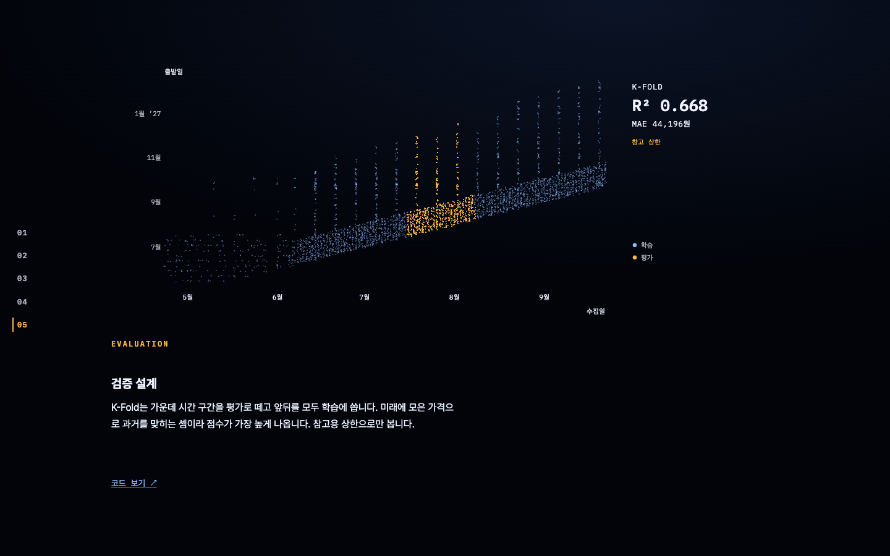
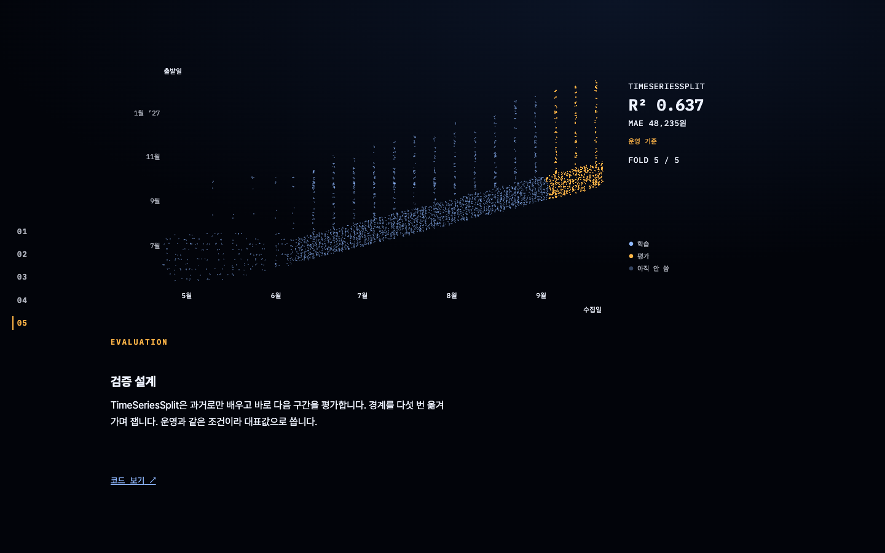

⑤ 검증 설계 — 세 방향 · 운영 화면(1440×900) 캡처 위에 판 위 숫자·제목을 바꿔 얹은 시안. 점 그림은 실제. 문구는 임시 · 탭을 눌러 비교
순서는 그대로(K-Fold → GroupKFold → TSS). 판 위 숫자가 바뀌지 않고 한 줄씩 쌓인다 — 지나간 방식은 흐리게 남고, 마지막 TSS만 호박색으로 크게. 제목은 숫자 대신 판단.
자막 1칸 — K-Fold

K-FOLDR² 0.668MAE 44,196원참고 상한
가장 높은 점수 대신, 운영과 같은 조건의 점수를 쓴다
K-Fold는 가운데 구간을 평가로 떼고 앞뒤를 모두 학습에 씁니다. 미래로 과거를 맞히는 셈이라 가장 높게 나옵니다.
자막 3칸 — TSS (끝)

K-FOLDR² 0.668참고 상한
GROUPKFOLDR² 0.649처음 보는 출발일
▶ TSSR² 0.637MAE 48,235원운영 기준 · 대표값
가장 높은 점수 대신, 운영과 같은 조건의 점수를 쓴다
TimeSeriesSplit은 과거로만 배우고 바로 다음 구간을 평가합니다. 운영과 같은 조건이라 대표값으로 씁니다.
순서를 뒤집는다(TSS → GroupKFold → K-Fold). 첫 칸에 대표값, 다음 칸들은 대표값과의 차이와 그 이유.
자막 1칸 — TSS (대표값)
TIMESERIESSPLIT
R² 0.637
MAE 48,235원
운영 기준 · 대표값
운영과 같은 조건에서 R² 0.637 · MAE 48,235원
과거로만 배우고 바로 다음 구간을 평가합니다. 더 높게 나오는 두 방식을 대표값으로 쓰지 않는 이유는 다음 칸에서.
자막 3칸 — K-Fold
K-FOLD
R² 0.668
대표값보다 +0.031
높지만, 미래에 모은 가격으로 과거를 맞힌다
운영과 같은 조건에서 R² 0.637 · MAE 48,235원
K-Fold는 가운데 구간을 평가로 떼고 앞뒤를 모두 학습에 씁니다. 점수는 가장 높지만 운영에서는 미래 가격을 알 수 없습니다.
세 방식을 한 판에 나란히. 자막 칸이 넘어가면 해당 판만 밝아진다(지금은 TSS 칸). 한눈에 비교되지만 판 하나가 작아지고, "단계가 넘어가는 흐름" 결정과 멀어진다.
자막 3칸 — TSS 밝게
GROUPKFOLD
R² 0.649
처음 보는 출발일
TIMESERIESSPLIT
R² 0.637
운영 기준 · 대표값 · MAE 48,235원
같은 모델도 평가 방식에 따라 R² 0.637~0.668 — 운영 조건 값을 쓴다
TimeSeriesSplit은 과거로만 배우고 바로 다음 구간을 평가합니다. 운영과 같은 조건이라 대표값으로 씁니다.